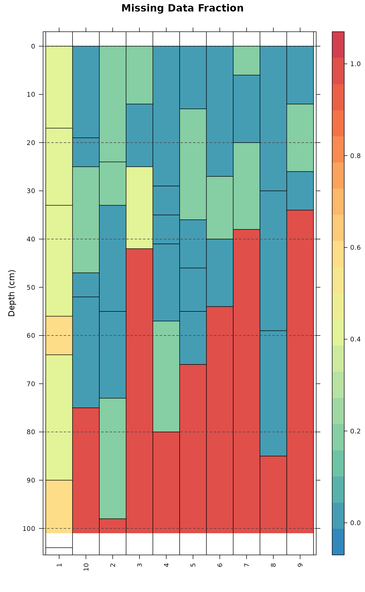

Generate a levelplot of missing data from a SoilProfileCollection object.
Usage
missingDataGrid(
s,
max_depth,
vars,
filter.column = NULL,
filter.regex = NULL,
cols = NULL,
...
)Arguments
- s
a SoilProfileCollection object
- max_depth
integer specifying the max depth of analysis
- vars
character vector of column names over which to evaluate missing data
- filter.column
a character string naming the column to apply the filter REGEX to
- filter.regex
a character string with a regular expression used to filter horizon data OUT of the analysis
- cols
a vector of colors
- ...
additional arguments passed on to
levelplot
Details
This function evaluates a missing data fraction based on slice-wise
evaluation of named variables in a SoilProfileCollection object.
Examples
# 10 random profiles
set.seed(10101)
s <- lapply(as.character(1:10), random_profile)
s <- do.call('rbind', s)
# randomly sprinkle some missing data
s[sample(nrow(s), 5), 'p1'] <- NA
s[sample(nrow(s), 5), 'p2'] <- NA
s[sample(nrow(s), 5), 'p3'] <- NA
# set all p4 and p5 attributes of `soil 1' to NA
s[which(s$id == '1'), 'p5'] <- NA
s[which(s$id == '1'), 'p4'] <- NA
# upgrade to SPC
depths(s) <- id ~ top + bottom
# plot missing data via slicing + levelplot
missingDataGrid(
s,
max_depth = 100,
vars = c('p1', 'p2', 'p3', 'p4', 'p5'),
main='Missing Data Fraction'
)
#> $fig

#>
#> $summary
#> id p1 p2 p3 p4 p5
#> 1 1 17 0 17 100 100
#> 2 10 0 0 20 0 0
#> 3 2 0 40 20 0 0
#> 4 3 0 33 67 0 0
#> 5 4 20 0 0 0 0
#> 6 5 0 20 0 0 0
#> 7 6 0 33 0 0 0
#> 8 7 67 0 0 0 0
#> 9 8 0 0 0 0 0
#> 10 9 33 0 0 0 0
#>